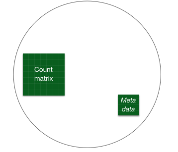

# Check that sample names match in both files
all(colnames(txi$counts) %in% rownames(meta))[1] TRUEall(colnames(txi$counts) == rownames(meta))[1] TRUEApproximate time: 60 minutes
DESeqDataSet object and discuss the structure of the objectThe first step in the DE analysis workflow is count normalization, which is necessary to make accurate comparisons of gene expression between samples.

The counts of mapped reads for each gene is the result of RNA expression (“interesting” part) in addition to many other factors (“uninteresting” part). Normalization is the process of adjusting raw count values to account for the “uninteresting” factors. In this way the expression levels are more comparable between and/or within samples.
The main “uninteresting” factors often considered during normalization are:
Sequencing depth: Accounting for sequencing depth is necessary for comparison of gene expression between samples. In the example below, each gene appears to have twice the expression in Sample A relative to Sample B. However, this is the consequence of Sample A having doubled sequencing depth.

In the figure above, each pink and green rectangle represents a read aligned to a gene. Reads connected by dashed lines connect a read spanning an intron.
Gene length: Accounting for gene length is necessary for comparing expression between different genes within the same sample. In the example below, Gene X and Gene Y have similar levels of expression, but the number of reads mapped to Gene X would be many more than the number mapped to Gene Y because Gene X is longer.

RNA composition: A few highly differentially expressed genes between samples, differences in the number of genes expressed between samples, or presence of contamination can skew some types of normalization methods. Accounting for RNA composition is recommended for accurate comparison of expression between samples, and is particularly important when performing differential expression analyses [1].
In the example below, imagine the sequencing depths are similar between Sample A and Sample B, and every gene except for gene DE presents similar expression level between samples. The counts in Sample B would be greatly skewed by the DE gene, which takes up most of the counts. Other genes for Sample B would therefore appear to be less expressed than those same genes in Sample A.

While normalization is essential for differential expression analyses, it is also necessary for exploratory data analysis, visualization of data, and whenever you are exploring or comparing counts between or within samples.
Several common normalization methods have been developed to account for these differences:
| Normalization method | Description | Accounted factors | Recommendations for use |
|---|---|---|---|
| CPM (counts per million) | counts scaled by total number of reads | sequencing depth | gene count comparisons between replicates of the same sample group; NOT for within sample comparisons or DE analysis |
| TPM (transcripts per kilobase million) | counts per length of transcript (kb) per million reads mapped | sequencing depth and gene length | gene count comparisons within a sample or between samples of the same sample group; NOT for DE analysis |
| RPKM/FPKM (reads/fragments per kilobase of exon per million reads/fragments mapped) | similar to TPM | sequencing depth and gene length | gene count comparisons between genes within a sample; NOT for between sample comparisons or DE analysis |
| DESeq2’s median of ratios [1] | counts divided by sample-specific size factors determined by median ratio of gene counts relative to geometric mean per gene | sequencing depth and RNA composition | gene count comparisons between samples and for DE analysis; NOT for within sample comparisons |
| EdgeR’s trimmed mean of M values (TMM) [2] | uses a weighted trimmed mean of the log expression ratios between samples | sequencing depth and RNA composition | gene count comparisons between samples and for DE analysis; NOT for within sample comparisons |
While TPM and RPKM/FPKM normalization methods both account for sequencing depth and gene length, RPKM/FPKM are not recommended. The reason is that the normalized count values output by the RPKM/FPKM method are not comparable between samples.
Using RPKM/FPKM normalization, the total number of RPKM/FPKM normalized counts for each sample will be different. Therefore, you cannot compare the normalized counts for each gene equally between samples.
RPKM-normalized counts table
| gene | sampleA | sampleB |
|---|---|---|
| XCR1 | 5.5 | 5.5 |
| WASHC1 | 73.4 | 21.8 |
| … | … | … |
| Total RPKM-normalized counts | 1,000,000 | 1,500,000 |
For example, in the table above, sampleA has a greater proportion of counts associated with XCR1 (5.5/1,000,000) than sampleB (5.5/1,500,000), even though the RPKM count values are the same. Therefore, we cannot directly compare the counts for XCR1 (or any other gene) between sampleA and sampleB, because the total number of normalized counts are different between samples.
This video by StatQuest shows in more detail why TPM should be used in place of RPKM/FPKM if needing to normalize for sequencing depth and gene length.
Since tools for differential expression analysis are comparing the counts of the same gene between sample groups, gene length does not need to be accounted for by the tool. However, sequencing depth and RNA composition do need to be taken into account.
To normalize for sequencing depth and RNA composition, DESeq2 uses the median of ratios method. On the user-end there is only one step, but on the back-end there are multiple steps involved, as described below.
The steps below describe in detail some of the steps performed by DESeq2 when you run a single function to get DE genes. Basically, for a typical RNA-seq analysis, you would not run these steps individually.
Step 1: creates a pseudo-reference sample (row-wise geometric mean)
For each gene, a pseudo-reference sample is created that is equal to the geometric mean across all samples.
| gene | sampleA | sampleB | pseudo-reference sample |
|---|---|---|---|
| EF2A | 1489 | 906 | sqrt(1489 * 906) = 1161.5 |
| ABCD1 | 22 | 13 | sqrt(22 * 13) = 17.7 |
| … | … | … | … |
Step 2: calculates ratio of each sample to the reference
For every gene in every sample, the ratios (sample/ref) are calculated (as shown below). Since the majority of genes are not differentially expressed, the majority of genes in each sample should have similar ratios within the sample.
| gene | sampleA | sampleB | pseudo-reference sample | ratio of sampleA/ref | ratio of sampleB/ref |
|---|---|---|---|---|---|
| EF2A | 1489 | 906 | 1161.5 | 1489/1161.5 = 1.28 | 906/1161.5 = 0.78 |
| ABCD1 | 22 | 13 | 16.9 | 22/16.9 = 1.30 | 13/16.9 = 0.77 |
| MEFV | 793 | 410 | 570.2 | 793/570.2 = 1.39 | 410/570.2 = 0.72 |
| BAG1 | 76 | 42 | 56.5 | 76/56.5 = 1.35 | 42/56.5 = 0.74 |
| MOV10 | 521 | 1196 | 883.7 | 521/883.7 = 0.590 | 1196/883.7 = 1.35 |
| … | … | … | … |
Step 3: calculate the normalization factor for each sample (size factor)
The median value (column-wise for the above table) of all ratios for a given sample is taken as the normalization factor (size factor) for that sample, as calculated below. Notice that the differentially expressed genes should not affect the median value:
normalization_factor_sampleA <- median(c(1.28, 1.3, 1.39, 1.35, 0.59))
normalization_factor_sampleB <- median(c(0.78, 0.77, 0.72, 0.74, 1.35))
The figure below illustrates the median value for the distribution of all gene ratios for a single sample (y-axis is the frequency).

The median of ratios method makes the assumption that not ALL genes are differentially expressed; therefore, the normalization factors should account for sequencing depth and RNA composition of the sample (large outlier genes will not affect the median ratio values). This method is robust to imbalance in up-/down-regulation and large numbers of differentially expressed genes.
Usually these size factors are around 1. If you see large variations between samples, it is important to take note as it might indicate the presence of extreme outliers.
Step 4: calculate the normalized count values using the normalization factor
This is performed by dividing each raw count value in a given sample by that sample’s normalization factor, generating normalized count values. This is performed for all count values (every gene in every sample). For example, if the median ratio for sampleA was 1.3 and the median ratio for sampleB was 0.77, you could calculate normalized counts as follows:
Raw Counts
| gene | sampleA | sampleB |
|---|---|---|
| EF2A | 1489 | 906 |
| ABCD1 | 22 | 13 |
| … | … | … |
Normalized Counts
| gene | sampleA | sampleB |
|---|---|---|
| EF2A | 1489 / 1.3 = 1145.39 | 906 / 0.77 = 1176.62 |
| ABCD1 | 22 / 1.3 = 16.92 | 13 / 0.77 = 16.88 |
| … | … | … |
Please note that normalized count values are not whole numbers.
Now that we know the theory of count normalization, we will normalize the counts for the Mov10 dataset using DESeq2. This requires a few steps:
DESeqDataSet objectWe should always make sure that we have sample names that match between the two files, and that the samples are in the same order. DESeq2 will output an error if this is not the case.
# Check that sample names match in both files
all(colnames(txi$counts) %in% rownames(meta))[1] TRUEall(colnames(txi$counts) == rownames(meta))[1] TRUEIf your data does not match, you could use the match() function to rearrange them.
Suppose we have sample names matching in the counts matrix and metadata file, but they are in different order. Write the line(s) of code to create a new matrix with columns re-ordered such that they are identical to the row names of the metadata.
Bioconductor software packages often define and use a custom class within R for storing data (input data, intermediate data and also results). These custom data structures are similar to lists in that they can contain multiple different data types/structures. But unlike lists, they have pre-specified data slots, which hold specific types/classes of data. The data stored in these pre-specified slots can be accessed by using specific package-defined functions.
Let’s start by creating the DESeqDataSet object, and then we can talk a bit more about what is stored inside it. To create the object, we will need the count matrix and the metadata table as input. We will also need to specify a design formula. The design formula specifies the column(s) in the metadata table and how they should be used in the analysis. For our dataset we only have one column we are interested in, which is ~sampletype. This column has three factor levels, which tells DESeq2 that for each gene we want to evaluate gene expression change with respect to these different levels.
Our count matrix input is stored in the txi list object. So we need to specify that using the DESeqDataSetFromTximport() function, which will extract the counts component and round the values to the nearest whole number.
# Create DESeq2Dataset object
dds <- DESeqDataSetFromTximport(txi, colData = meta, design = ~ sampletype)Since we had created a data variable in the last lesson that contains the counts, we could have also used that as input. However, in that case we would want to use the DESeqDataSetFromMatrix() function.

You can use DESeq-specific functions to access the different slots and retrieve information. For example, suppose we want to retrieve the original count matrix, we would use counts() function (Note: we nest it within the head() function so that we can see just the first few lines of the matrix. You could also use the View() function to view the result in the script editor rather than in the console):
head(counts(dds)) Irrel_kd_1 Irrel_kd_2 Irrel_kd_3 Mov10_kd_2 Mov10_kd_3
ENSG00000000003 4376 3645 2968 6178 3688
ENSG00000000005 27 29 23 37 13
ENSG00000000419 1478 1288 884 2369 1340
ENSG00000000457 508 405 357 934 571
ENSG00000000460 1394 1164 850 2172 1217
ENSG00000000938 1 1 0 2 0
Mov10_oe_1 Mov10_oe_2 Mov10_oe_3
ENSG00000000003 3343 3114 2079
ENSG00000000005 25 38 22
ENSG00000000419 1890 1766 1271
ENSG00000000457 646 591 354
ENSG00000000460 1183 1139 673
ENSG00000000938 0 0 0As we go through the workflow, we will use relevant functions to check what information is stored inside our object.
The next step is to normalize the count data in order to make fair gene comparisons between samples.
To perform the median of ratios method of normalization, DESeq2 has a single estimateSizeFactors() function that will generate size factors. We will demonstrate this function in the example below, but in a typical RNA-seq analysis, this step is automatically performed by the DESeq() function, which we will discuss later.
# Estimate size factors
dds <- estimateSizeFactors(dds)By assigning the results back to the dds object, we are filling in the slots of the DESeqDataSet object with the appropriate information. We can take a look at the normalization factors of each sample using:
# Look at size factors
sizeFactors(dds)Irrel_kd_1 Irrel_kd_2 Irrel_kd_3 Mov10_kd_2 Mov10_kd_3 Mov10_oe_1 Mov10_oe_2
1.1150371 0.9606366 0.7493552 1.5634128 0.9359082 1.2257749 1.1406863
Mov10_oe_3
0.6541689 Now, to retrieve the normalized counts matrix from dds, we use the counts() function and add the argument normalized=TRUE.
# Get normalized counts matrix
normalized_counts <- counts(dds, normalized=TRUE)We can save this normalized data matrix to file for later use:
# Save normalized counts matrix
write.table(normalized_counts, file="./data/normalized_counts.txt", sep="\t", quote=FALSE, col.names=NA)DESeq2 doesn’t actually use normalized counts; rather it uses the raw counts and models the normalization inside the Generalized Linear Model (GLM). These normalized counts will be useful for downstream visualization of results, but cannot be used as input to DESeq2 or any other tools that perform differential expression analysis that use the negative binomial model.